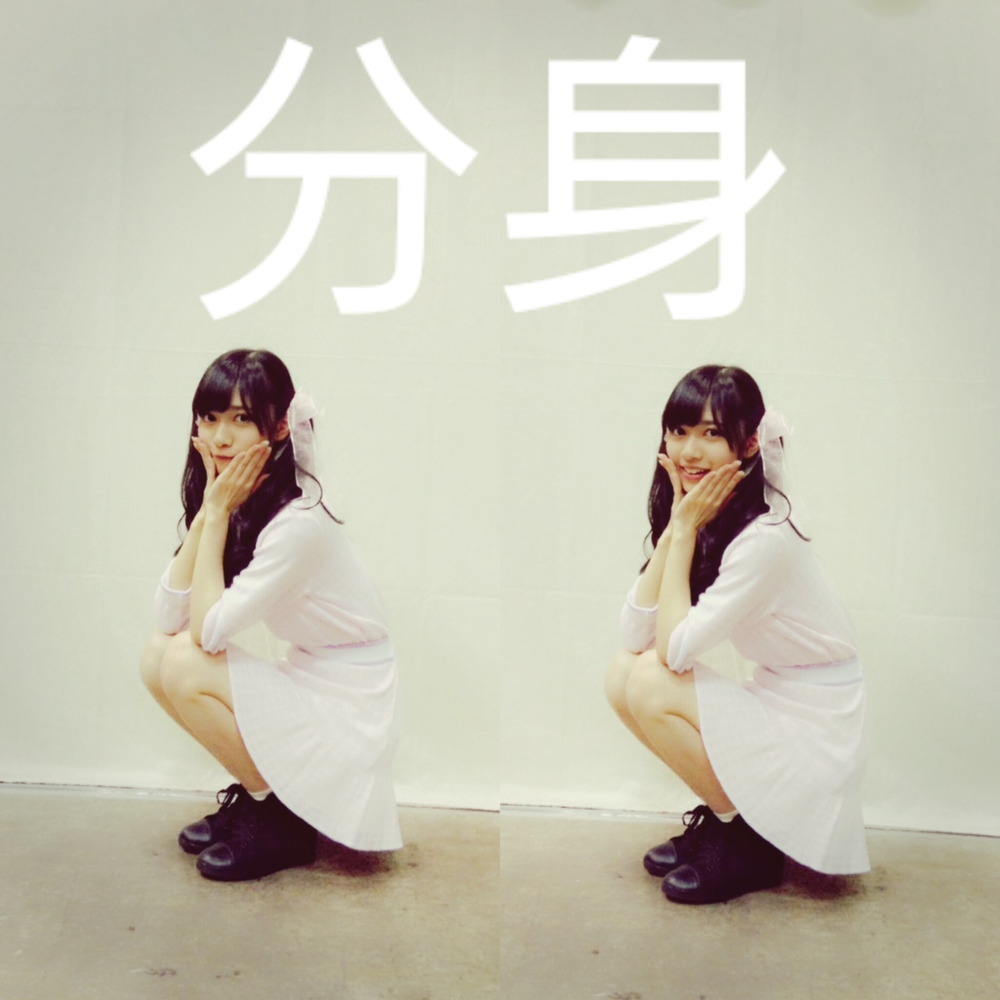
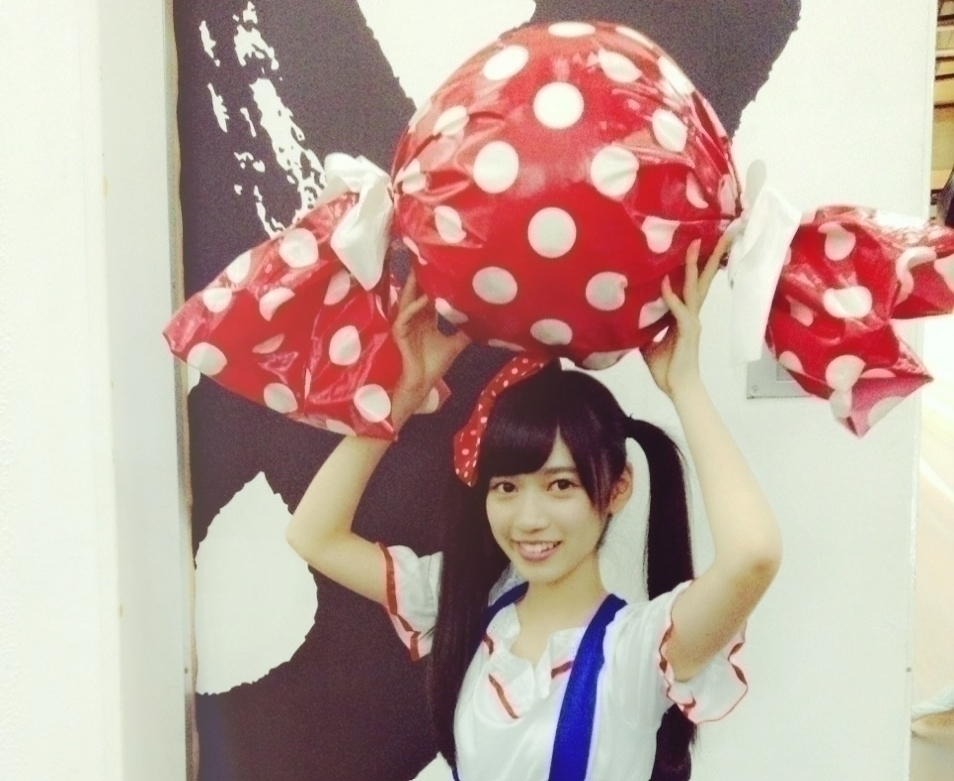

2015/1111Wed誰か、缶のコーンポタージュ のコーンを綺麗に残さず食べられ る方法を教えてください。 深 川麻衣ですA，回しながら飲むと いいらしいですよ:-)
っと何個か前の
深川さんのブログを
読んでて思ったテラダで
あります！！！
俺物語が実写
そして、大好きな
オオカミ少女と黒王子も
実写化
いつぞやかのオフの日に
アニメイトさんにお邪魔したり
休みがあるとやっぱり
アニメに尽きるとシミジミ感じた今日この頃。
DIABOLIK LOVERS MORE,BLOOD万歳！
コウ様万歳！
アンダーライブ期間を終えてからちょっとアニメを
みるという
生駒さんと語れてよかった！
早く生駒さんにお会いしたい！！
おはようございます
本当に
おはようございますver
こんにちは
こんばんは
寺田蘭世です
好きな食べ物はトマト
色も赤色
赤ちゃんの頃から好きだったトマト
他の食べ物は飽きちゃったりしましたが
トマトだけは昔から唯一
飽きなかった食べ物です
トマトの育ち方も好きです
あの水を与えないほうが
甘くなる
このど根性パワー
ママに
らんぜそっくりでうざい
って言われちゃいました
今の私はうざい、、、
１３枚目
個別握手会 横浜○
123部
何年ぶりかと言うくらい
1部のあの朝を
経験しました
昔はレーンに数人しかいなくて心細くて
せっかくおめかししても
恥ずかしいだけだ
なんて考えていて、、、
だから今回も1部
からスタートの3部制って
発表された時は
すごく心配でした
あの時みたいになるのが怖いなって
でも、そんなことなくって
1回も列が途切れることなく
楽しい時間を過ごせました
この楽しさをこの気持ちを
昔の私に教えてあげたい！
って思えるくらい
ハッピーでした！
はじめましてさんも凄く
多くてなんか
ポカポカな気持ちでした！
ありがとうございます:-)
朝は
早起きさん限定の
メガネにお団子ヘアーでした
ちょっと寝起きをイメージしてカジュアルにしました
中にかりんちゃんに貰った
ピンクチェック
シェリーメイちゃんが
プリントされてるシャツを着てました！
写真モバメで送ります！
2，3部

2部はツインテールに
ピンクのリボン
リボン好評で
良かったです:-)
ちなみに100均様で購入した
プレゼント用リボンを切って使ってます
女の子はぜひ！
3部は約束の前髪流しスタイル
約束したのに誰一人
約束を覚えておらず
前髪の変化には気付いてくれたけど
皆様約束は忘れちゃやーよ
約束は絶対
これ、テラダのモットー
衛藤さんから頂いたお洋服
これお気に入りで
すでに着すぎて毛玉が目立ってしまいそうなレベルで
使わせてもらってます
また、よかったら
お洋服ください衛藤さん:-)
質問返し○
○らんぜの勢いとまらんぜ勢力拡大中
→ででんでんででん♬
カクダイチュウ
カクダイチュウ
○全国ツアーの時、大阪に一人旅しに行くって言ってたけどもう来たのかな？？もしもう行ったらならいい場所教えてほしいぜい^_^
→この話すると長くなりそうなので簡潔にさせて頂きます
1人大阪、兵庫行きましたよ
もちろんメインは宝塚
YES宝塚
1人で新幹線乗って
新大阪ついてから
知らない土地での電車
駅員さんに何回も聞いちゃいましたが
無事、宝塚を楽しめました:-)
朝美絢様がたいへん
眩しかったです
この一言でおさめときます
じゃないと
あと、25時間語れちゃうので、、、
２５時間なんてあっという間なんだろうな:-)
朝美様
お誕生日おめでとうございます！！！！！！！！！
宝塚に関しては
乃木マニアにて語らせて頂きました！
○CD買ったららんぜちゃんの生写真入ってました〜
→ありがとうございます
私の生写真ですか
なんか申し訳ない:-(
でも、このコメントをテラダ本人が読んでこうやって
コメント返しでお返事できたこと何かのご縁だと思い
。
よかったら大切にしてください
○初コメです！！
らんぜが可愛いのは当たり前だけれど、最近歌やダンス、声にもいつの間にか完全に魅了されてますね笑
嫉妬の権利で最前列に来てたのも凄く嬉しかったし、
同い年の子が頑張ってるから自分も頑張ろうって気になります！！ありがとう！
これからも頑張って！！！
→ありがとうございます
歌声はよく意外だねとか
蘭世からほんとに声出てるのとかって言われるくらい意外らしいですね。笑
ちょっとハスキーとか
言われます
レコーディングのときは
仮歌を歌ってもらってる
兼レコーディングして下さるスタッフさんに
似てるねーなんて言われちゃったりと
あと声小さかったりと
自分の声あんまり好きじゃないんですが
だからこそ声褒められると嬉しいですありがとう:-)
ちなみに最終オーディションでは完璧ぐーのねを
歌わせてもらいました
これは可愛い声の代表って感じの曲ですが
一応、高くも歌えるんですよ
雰囲気にあわせてと言うか
歌に関しては人に釣られやすくて、、、
だから歌自信ないけど
いろんな曲歌ってみたいですね
○個人ＰＶも はじめは 本の内容が難しかったんだけど 何度か見ているうちに 内容も少しわかるようになってきて 新しいことを学べた気がします！ 蘭世のおかげですヾ(＠⌒ー⌒＠)ノ
→コメントありがとうございます:-)
確かに、このPVは内容を理解するのに何回も
再生しなきゃならない
PVだと思います
だからこそ内容ももちろんですが
そのついでに私の顔とか
表情もオマケでいいので
見て下さい！
乃木中○
乃木中にてサンクエトワールで大人への近道
歌収録させていただきました
ユニットが歌収録させて頂けるのってレアで大変ありがたかったです
せっかく名前もついたユニットだし大切にしたいですね！
ごはん会もしたけど
やっぱりこのメンバー好きすぎです
アツい話もできました！
もっともっと求められる
グループにしたい
これから
ゆっくり
ゆっくり参りましょう
宜しくお願いいたします
力持ちになりました。笑

ハロウィンは
特に何もしませんでした
Trick or Treatって言いたかった、、、
来年が来るなら
Trick or Treat
言わせてください
ハロウィンとクリスマス
冬って楽しいですね
ハロウィンは何も出来なかったから
クリスマスは
ケーキ食べて紅茶飲んで
クリスマスプレゼントを
貰ったりあげたりとか
本格的なことしてみたいです！
でも、そんな友達が
いないです！
ですが今年も
クリスマス近くに握手会があるから
1人クリスマスとか
お家でクリスマスとか
寂しくなく過ごせそうです
やっぱり人が沢山いたほうが安心するよね:-)
おまけ○
絢音（鈴木絢音）
琴子（佐々木琴子）
テラダでカフェに行ってきました:-)
なんかすごく久々に3人で
遊びました
やっぱりオモシロイ
写真撮るの忘れちゃいました
っと言いますかこの3人は
写真写真っていう感じでも
ない本当に不思議で楽しいメンバー
個人的な意見ですが！
また、行こうって約束したのでまた行こうね
どこ行こうかな:-)
楽しみです:-)
また、告知だったり
色々書きたいので
更新します！
本当の
おやすみなさいですver
前髪が崩れてます
レアです
すっぴんです
レアです
2015/11/11 11:36


コメント(672)
世界へピース。
蘭世ー
いいねー 可愛いー
武道館がんばれ！
絶対手に入れます！！あと名古屋の収録お疲れ様！
楽しみにしてます！！
こないだの握手楽しかったよ！
また行くから、覚えていたら名前呼んでー！
まいまいの質問答えてくれてありがと！
まいまい見てくれるから喜んでると思うよ！
みさみさから貰った洋服も似合ってる(∩´∀`∩)
こんにちは
こんばんは゜-゜
深川さんとのコラボですか！笑
深川さんがブログコメントに現れることを期待しておきます。。
猛男かっこいいo(^o^)o
ブログ更新ありがとう！
ブログを通しても蘭世の日々の成長を感じます！
今日も１日頑張ろうp(^^)q
これからも応援してます
メールで言ってたけど更新早かったね。笑
最近寒いねー
でも蘭世はお仕事充実してるみたいだし、寒さも感じないくらい忙しいかな？？
様々なメディアで蘭世を見かけます！
またがんばっていきましょう♪♪
今月末の握手会楽しみにしてます！
またコメントします〜٩( 'ω' )و
俺もコーンポタージュそーやって飲んでみるね！
11月29日の握手会行くからね！楽しみ！！
最近蘭世からたくさんモバメきて、元気もらってる！
ゆーより:-)
もうめっちゃ可愛い写真ばっかりやわ(￣▽￣)
握手会とか行きたいけど、なんせ鹿児島で大学に行ってて忙しいもんで(~_~;)
バースデーには行くから待ってて欲しい^_^
サンクエトワール最高p(^_^)q
ライブの時にどうしたら見つかるかな？
寒いから体調に気をつけてね^_^
じゃ*･゜ﾟ･*:.｡..｡.:*･'(*ﾟ▽ﾟ*)'･*:.｡. .｡.:*･゜ﾟ･*
あつき
みさみさの服を着ている蘭世がかわいすぎる！！！
もっとおねだりしてみてください。
最近蘭世の勢いとまらんぜすぎて
ちょっとびっくりしてます！笑
このまま今年も来年勢いとまらんぜで！笑
自分は応援しかできませんが精一杯させてもらいます！！！
ちょっと忙しいのでまたきてコメントします！
ではまた！
握手会、たのしも〜ね(・ω・)ノ
衣装チェンジがあるから毎部ちょ〜たのしみだよ♡
またね(=ﾟωﾟ)ﾉ
まぁこの続きは次の握手会で(笑)
最近忙しそうだね。身体には気おつけて息抜きも大切にしてね(・∀・)b
今忙しいから夜読むー！！！
ブログもモバメも蘭世がたくさん送りたい気持ちはよーくわかってるので無理せずやってください。
今日のモバメ連投は笑ってしまったよ笑
明後日は朝イチでフリーペーパー貰いに行くね！
初表紙記念＼(^o^)／
3日の握手会、お初の友達も満足してたみたいですよ！また、券取るよとのこと。これ以上のことはないですね。
おかげで最高の誕生日になりました( ´͈ ᵕ `͈ )
しばらくあえなくなるって思うと寂しくなるけどまた会いに行くからね(๑'ڡ'๑)
これからも寺田らしく頑張れ
すっぴんでも可愛いな♡
流体力学が作用してるらしいよ！
前の記事にも書いたけど蘭世単独表紙おめでとう！ほんまに勢いとまらんぜ！だね(´^∀^｀)
大人への近道、蘭世の声わかったよ！
蘭世大好き(´つヮ⊂)ｳｵｫwww
いつもプーさんとわどぅーさんがお世話なってます
？
アンダラ千秋楽蘭世のサインボール落ちてきました。笑
俺のところには来ないだろうなーと思ってたら横で誰かが弾いちゃったのが足元に。笑
大学受験だから握手は来年になってしまうので遅くなったけどブログで感謝伝えるね！ありがとー！
ボルダリング楽しい(´∇｀)
(米･ω･)ﾉﾞ 毎日？
(米´▽`)ﾉﾞ まいぺーす！
絶対みるねっ！
みさみさからもらった服かわいいね♩
らんぜちゃんは美容のためにやってることとかある？？
もしあったら知りたいな♡
肌綺麗だし細いし羨ましい
今回も蘭世のいろんな姿が見れてたま＼らんぜ／(笑)←
いや、らんらん！
まいまいがノギビンゴの乃木の塚歌劇団の回で
そう呼んでたのを思い出したから、
これからそうすることにした！
自分より若いのに毎日お仕事、
相当なプレッシャーを感じながら
生活していると考えると、
自分は何をやってるんだろうと思う。
今の私はうざい…(パクリ)
【質問】
さっきも言ったんだけど、
まいまいが呼んでた呼び方 らんらん
これって今でもそう呼ばれてるのー？
おはようございます
こんにちは
こんばんは
KICKNと申します。
好きな人は寺田蘭世という方です。笑
トマトは苦手なので、もし良い食べ方があれば教えてほしいです(^^)
メガネお団子いいなーー
メガネが好きな自分からすれば、もうヤバくてテンションMaxになりそう。モバメ楽しみにしてるね(*^o^*)
次蘭世に会えるのは29日になるので、楽しみにしてます(^^)
もちろん1部から行きます！蘭世生誕Tシャツ着て行こうかな
サンエトで全国とか回れるようになってほしいなと思います！
てか、なれるだけの力はあると思う。いや、ある！！！
一緒に坂を駆け上がっていこー！！
フリーペーパーのやつも近場にないから、ちょっと遠出してもらってくるぜーー(^^)
蘭世の声好きです。
全体的に好きです(^^)
めちゃくちゃ応援してます。
では、
これからも、蘭世の勢い止まらんぜーー！！
缶のコーンポタージュ飲むのに飲み口の下の所を押してくぼませたらコーンも出やすくなるよ
コメントする